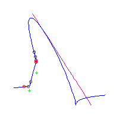
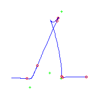

Here, we draw all the rational plane quintics with 7 flexes at the points 3,-2,-1,0,1,2,3 and one cusp at infinity. There are 21 such curves in all. However, since the set of ramification points is fixed under the involution that sends s to -s, we may reparameterize any such curve (reversing the direction of parameterization) to obtain another. This either gives the same parameterized curve back (up to fractional linear transformation in the plane), or it gives a different curve.
The images of the original curve and the reparameterization, as unparameterized curves in the plane are identical. An artifact of the method we use for drawing such curves is that the reparameterized curve is the image of the original curve, reflected about some vertical axis. Thus the curves which equal their reparameterization are symmetrical while those which do not are asymmetrical.
Altogether, there are 3 symmetrical curves and 18 asymmetrical curves with this choice of ramification. (In fact, this decomposition of 3 and 18 persists for any similar symmetric (under s maps to -s) choice of the 7 flexes with a cusp at infinity.
Below, we display the 21 curves. We mark the positions of the flexes by red circles. Some curves have only 6 flexes displayed; the 7th flex is on the line at infinity, We indicate the positions of the solitary points by green crosses. Since, when forming a cusp, two flexes and one solitary point collide, the `apparent' cusps with flexes nearby that are pointing at a solitary point, are not cusps. The true cusps are bare and unadorned with nearby flexes and solitary points. (The `points' at the top of the rightmost curve in the first row below illustrate this.)
Some curves have a magenta line those curves have a pair of complex nodes, and the magenta line is the real line on which the complex conjugate nodes lie. While this magenta line appears to be tangent to the curve, it is not. (If it were, then it would have intersection number 6 with the complex curve, a quintic, and that violates Bézout's Theorem.) We strongly urge the reader to print out this page, the page consisting of quintics having 7 flexes and one planar point, as well as the page consisting of quintics having 9 flexes and compare the pictures. Lastly, the MAPLE files used to draw these pictures are found in the subdirectory 7flexes1cusp.maple/.
Consider first the curves with two solitary points. There is 1 symmetric such curves and 3 pairs of asymmetric curves, for a total of 7 curves with 3 solitary points.
| The first curve is symmetric. The remaining are in asymmetric pairs. The first 4 have 3 nodes The last 2 have a pair of complex nodes |
||
 |
||
|  |  |
|  |